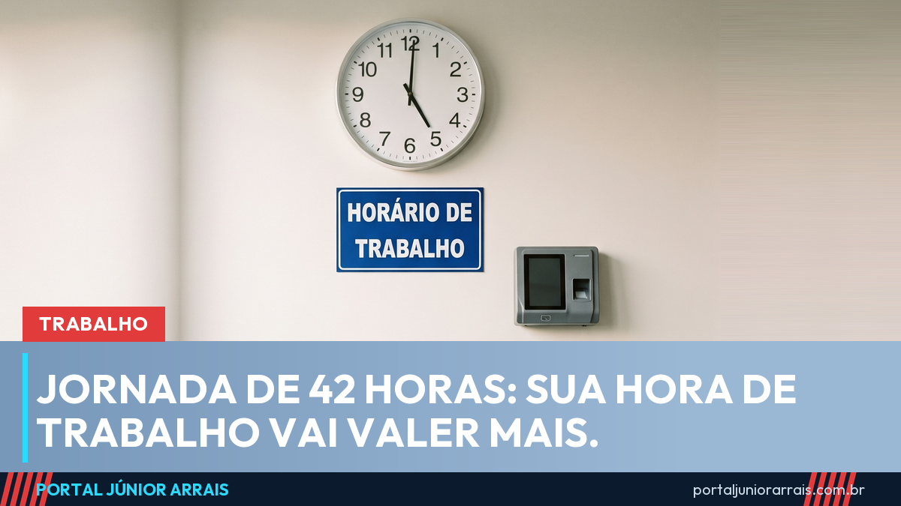

Jornada de 42 horas: decreto muda o cálculo da hora e a hora extra passa a valer mais

O governo federal publicou o Decreto nº 13.173, em edição extra do Diário Oficial de 19 de novembro de 2026, com as regras de aplicação da nova jornada de trabalho. A principal novidade está na conta do salário: quando o limite cair para 42 horas semanais, em meados de dezembro, o valor da hora deixa de ser calculado com o divisor 220 e passa a usar o divisor 210. Na prática, cada hora de trabalho, e cada hora extra, passa a valer mais.
O decreto regulamenta a Emenda Constitucional 141, que acabou com a escala de uma folga só. O portal explicou a mudança na matéria sobre o fim da escala 6x1 e a jornada de 42 horas. Agora saíram os detalhes que faltavam.
Quanto passa a valer a sua hora
Para saber o valor da hora, o salário do mês é dividido por um número fixo, chamado divisor. Com a jornada de 44 horas, esse número é 220. O decreto fixou os novos:
- Jornada de 42 horas semanais: divisor 210;
- Jornada de 40 horas semanais (a partir de dezembro de 2027): divisor 200.
Veja um exemplo com salário de R$ 2.200 por mês:
- Hoje (divisor 220): a hora vale R$ 10,00 e a hora extra com 50% vale R$ 15,00;
- Com 42 horas (divisor 210): a hora vale cerca de R$ 10,48 e a hora extra, R$ 15,71;
- Com 40 horas (divisor 200): a hora vale R$ 11,00 e a hora extra, R$ 16,50.
O salário do mês continua o mesmo. O que muda é que ele passa a pagar menos horas, e por isso cada hora fica mais cara para a empresa. Isso pesa na hora extra e no banco de horas e também em parcelas calculadas sobre a hora, como o adicional noturno.
O decreto ainda diz que, se a lei, o acordo coletivo ou o contrato previrem um divisor menor, vale sempre o que for mais favorável ao empregado.
Quem é alcançado
As regras valem para os empregados urbanos, rurais e domésticos e, no que couber, para os trabalhadores avulsos. Ou seja: a trabalhadora doméstica com carteira assinada e o empregado do campo entram na nova jornada do mesmo jeito que quem trabalha no comércio ou na indústria.
Escala 12x36 e turno de revezamento
Duas situações ganharam regra própria:
- Escala 12x36 (12 horas de trabalho por 36 de descanso): a conta é feita pela média do mês. Se a média passar do limite semanal da Constituição, o que sobrar tem de ser compensado ou pago como hora extra, do modo combinado em convenção ou acordo coletivo;
- Turnos ininterruptos de revezamento (quem alterna entre manhã, tarde e noite): a jornada é de 6 horas por dia, a não ser que convenção ou acordo coletivo disponha de outra forma. Mesmo nesse caso, a média do mês precisa respeitar o limite semanal e os dois dias de descanso.
O que ainda falta sair
O decreto deixou para o Ministério do Trabalho e Emprego a tarefa de detalhar, em ato próprio, como ficam o descanso semanal remunerado de dois dias e os regimes especiais de jornada. Esse ato ainda não foi publicado.
Também seguem valendo os pontos da emenda que o decreto não alterou: o salário e o piso da categoria não podem ser reduzidos; as cláusulas de acordos coletivos que contrariem a nova regra perdem o efeito dois meses depois da publicação da emenda; e os empregados de empresas contratadas pelo poder público podem ter a redução aplicada só depois do ajuste do contrato, em até um ano.
Perguntas frequentes
Meu salário vai aumentar?
O salário mensal não muda por causa do decreto. O que aumenta é o valor de cada hora, porque o mesmo salário passa a corresponder a menos horas de trabalho. Quem faz hora extra sente a diferença no contracheque.
A partir de quando vale o divisor 210?
A partir do momento em que o limite de 42 horas semanais entrar em vigor, dois meses depois da publicação da emenda, o que cai em meados de dezembro de 2026. O divisor 200 vem com as 40 horas, um ano depois.
Trabalho 12x36. Perco essa escala?
Não necessariamente. A escala pode continuar, mas a média mensal de horas precisa respeitar o novo limite. O que passar disso é compensado ou pago como extra, conforme a norma coletiva da categoria.
A empresa pode reduzir o salário porque a jornada diminuiu?
Não. A Emenda 141 proíbe qualquer redução salarial por causa da jornada menor, inclusive do piso.
Cuidado com golpe
Sempre que sai uma regra nova sobre salário, aparecem mensagens oferecendo "recálculo da hora extra" ou "liberação de valores atrasados da nova jornada" em troca de uma taxa antecipada, de um Pix ou do envio de senha e foto de documento. Não existe cadastro, lista ou fila para ter direito à jornada menor, e nenhum órgão do governo cobra taxa nem pede Pix ou senha por causa disso.
Se depois de dezembro a hora extra continuar sendo paga pela conta antiga, ou se você tiver dúvida sobre a sua escala, guarde os contracheques e os registros de ponto e procure um profissional de sua confiança para conferir os cálculos e o acordo coletivo da sua categoria.
Fontes oficiais
- Decreto nº 13.173, de 19 de novembro de 2026 (Diário Oficial da União, edição extra: divisor do salário-hora, escala 12x36 e turnos de revezamento)
- Emenda Constitucional nº 141, de 16 de outubro de 2026 (jornada de 40 horas, dois dias de descanso e prazos de transição)
Conteúdo informativo — não substitui orientação individualizada sobre o seu caso.
Júnior Arrais · Advogado e editor do Portal Júnior Arrais
Advogado (OAB/MG 193.054, OAB/SP 535.563, OAB/RJ 268.781, OAB/PE 71.237, OAB/AL 24.340-A, OAB/PA 41.782-A e OAB/PR 138.540), atuante em direito previdenciário e trabalhista, e comunicador de Ubá (MG). Escreve todos os dias sobre benefícios sociais, INSS, trabalho e economia do dia a dia, a partir do Diário Oficial, de portarias e de fontes oficiais, em linguagem simples. Conheça a linha editorial e a política de correções do portal.